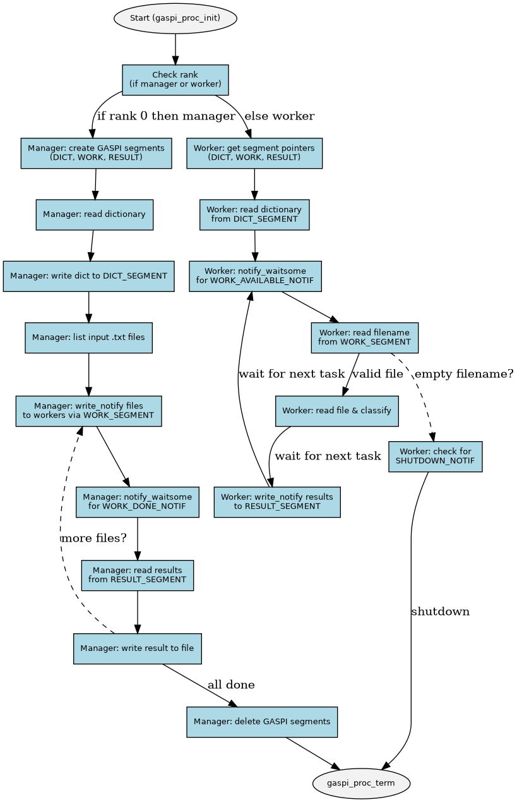

- Author
- Wiktor Szewczyk
Overview
A parallel document classification engine based on GASPI (Global Address Space Programming Interface), inspired by Chapter 9 of Parallel Programming in C with MPI and OpenMP by Michael J. Quinn.
This project implements a scalable manager–worker architecture using GASPI's PGAS (Partitioned Global Address Space) model to classify text documents into feature vectors. It uses hashing to match words against a shared dictionary and distributes processing using one-sided communication.
It currently supports only .txt documents.
Architecture
- The manager process (rank 0):
- creates GASPI memory segments for communication (DICT, WORK, RESULT),
- reads the dictionary file (one keyword per line),
- writes dictionary to shared DICT_SEGMENT for all workers,
- scans the input directory for
.txt files,
- distributes file paths to workers via WORK_SEGMENT using gaspi_write_notify,
- receives classified vectors from RESULT_SEGMENT and writes them to the output file.
- Each worker process (rank 1 to n-1):
- reads the dictionary from DICT_SEGMENT,
- waits for work notifications via gaspi_notify_waitsome,
- receives file paths from WORK_SEGMENT,
- tokenizes and lowercases the document content,
- hashes each word against a fixed-size dictionary hash table,
- builds a feature vector based on word presence or frequency,
- writes results to RESULT_SEGMENT using gaspi_write_notify.
GASPI Memory Segments
The application uses three global memory segments:
- DICT_SEGMENT_ID (0): Shared dictionary data
- WORK_SEGMENT_ID (1): File assignment from manager to workers
- RESULT_SEGMENT_ID (2): Classification results from workers to manager
Each worker has dedicated offsets within segments to avoid memory conflicts.
Flow Diagram

Project Structure
.
|- include/ # Header files
|- tests/ # Criterion unit tests
|- docs/ # Doxygen config + generated docs
|- make/ # Makefile submodules (build, test, docs, run)
|- scripts/gaspi_wrapper.sh # GASPI environment wrapper script
|- scripts/gen_data.py # Script for generating random data
|- Makefile # Entry point Makefile
|- nodes.txt # GASPI
node configuration file
int main(int argc, char *argv[])
void manager(const char *input_dir, const char *dict_file, const char *output_file, int processes_num)
Entry point for the manager process.
void worker(void)
Entry point for each GASPI worker process.
Requirements
Environment Setup
Before building or running the project, you must set the required environment variables:
export GASPI_TARGET_DIR=/path/to/gpi2
export MPICH_TARGET_DIR=/path/to/mpich
export CUDA_TARGET_DIR=/path/to/cuda
Build
Builds the executable at:
Running the Classifier
make run GASPI_FLAGS='-n 8' RUN_FLAGS='input/ dict.txt out.txt'
GASPI_FLAGS: passed to gaspi_run (default: -n 16)RUN_FLAGS: arguments for ddc (default: ./example/input/ ./example/dict.txt ./example/output/result.txt)
Running Tests
Runs all unit tests with Criterion.
Documentation
git submodule update --init --update
make docs
- HTML docs:
docs/html/index.html
License
MIT License. See LICENSE for details.
References
 1.9.8
1.9.8